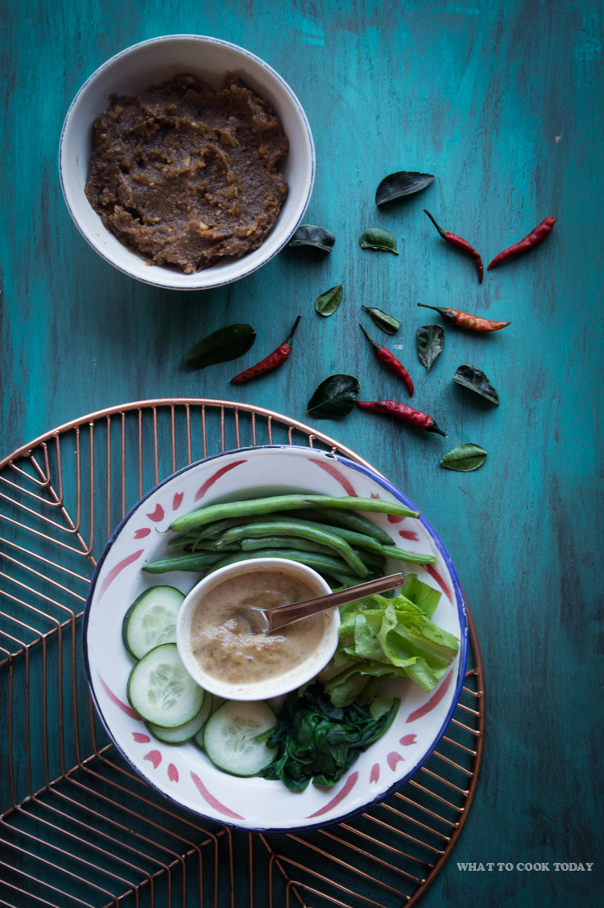

Pecel

Description
a set of vegetables served with peanut sauce. I'd like to call this Indonesian salad. For vegetarian out there, try it, you'll like it!
Ingredients
- 250 gr spinach, cleaned, cut into bite-sized pieces
- 5 long beans, cleaned, cut into bite-sized pieces
- 1 small cucumber, peeled, seeds removed, cut into bite-sized pieces
- 50 gr bean sprout
- 2 hard boiled eggs (optional), peeled
- 4 tbsp sambel pecel
- 0.5 cup warm water